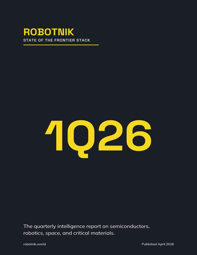

Research
Original research, analysis, and field transmissions from Robotnik
LATEST REPORT

The inaugural quarterly intelligence report
1Q26 State of the Frontier Stack
Covering the first full quarter of Robotnik Composite data. Cross-sector dependency analysis across semiconductors, robotics, space, and critical materials.
FIELD TRANSMISSIONS
Weekly intelligence briefings from Robotnik. Each transmission covers the most significant developments across semiconductors, robotics, space technology, and critical materials — with cross-sector analysis that surfaces the dependencies others miss.
Sign up to receive transmissions →
SECTOR BRIEFINGS
Quarterly deep-sector reports produced by Robotnik's network of academic and industry contributors. Each briefing maps a specific sector's supply chain, competitive dynamics, and strategic outlook.
Sign up to receive transmissions →
DEEP DIVES
Long-form analysis triggered by major events — policy shifts, supply chain disruptions, breakthrough technologies, or strategic acquisitions that reshape the frontier stack. Published as events warrant.
Sign up to receive transmissions →